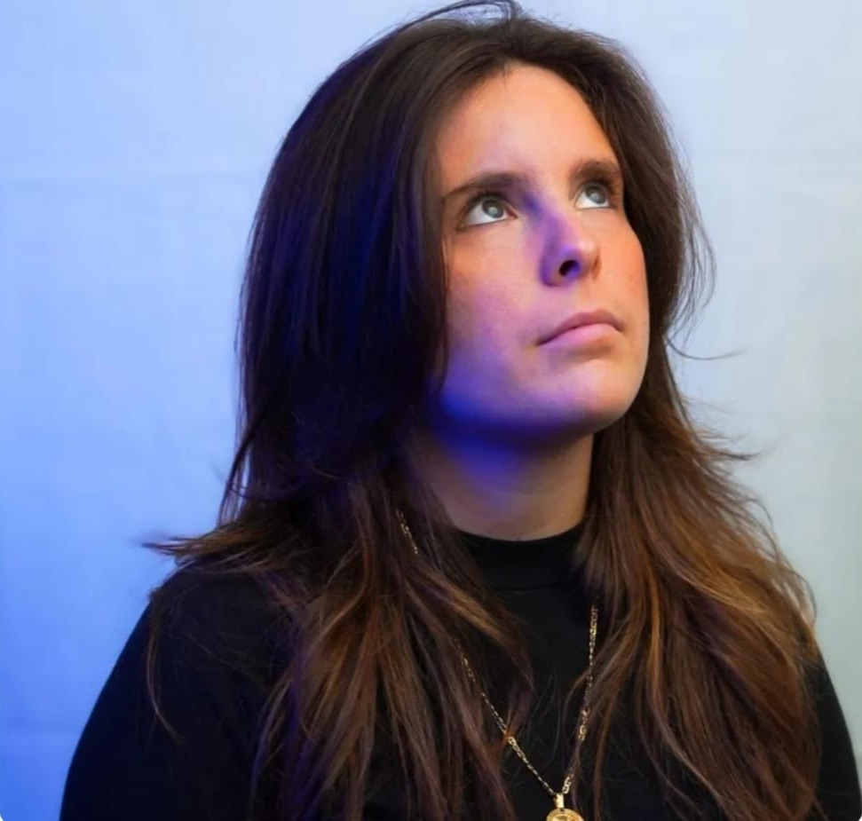

À propos
Lauriane Wroblewski
Je conçois des stands sur mesure et modulaires, du premier croquis au montage : plan d'implantation, rendus 3D, chiffrage et coordination de la fabrication.
Une seule interlocutrice, de la première esquisse à l'ouverture du salon.
Mes valeurs
01
Modularité
Une structure qui s’adapte à chaque surface et à chaque salon.
02
Réemploi
Les mêmes éléments resservent d’un événement à l’autre.
03
Durabilité
Du matériel solide, pensé pour durer et jeter moins.
04
Rapidité
Un montage et un démontage plus courts sur le salon.
05
Créativité
Le modulaire n’empêche pas un stand qui marque les esprits.
06
Accompagnement
Une seule interlocutrice, du premier croquis à l’ouverture.